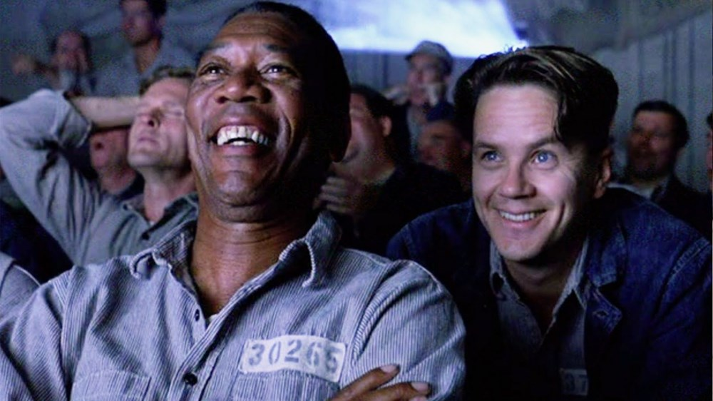
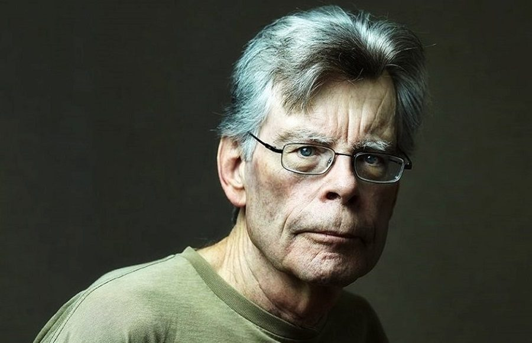
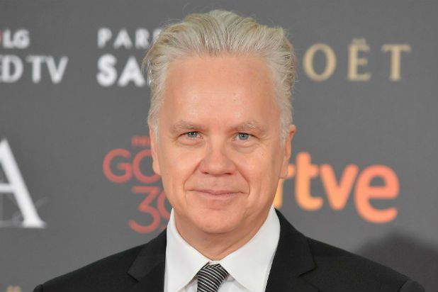
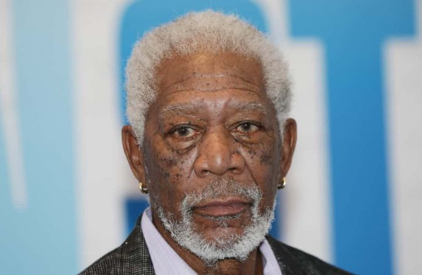

Esaretin Bedeli, Andy ve Red isimli iki mahkumun parmaklıklar ardında kurdukları dünyanın hikayesini anlatıyor. Andy Dufresne, genç ve başarılı bir bankerdir. Karısını ve karısının sevgilisini öldürmek suçundan yargılanır ve ömür boyu hapis cezası alır. Shawsank Hapishanesi'nde dayak, işkence, tecavüz, her türlü durum yaşanmaktadır fakat Andy gene de hayata bağlı ve iyimserdir. Bu tutumu etrafındakileri de etkiler. Andy umutlu bakış açısıyla çevresindeki tüm mahkumları, parmaklıklar arkasında bile özgür bir yaşam olabileceğine inandırır. Andy'nin bu çabalarına ortak olacak bir arkadaşı da olacaktır: Red.Bir Stephen King uyarlaması olan filmde Morgan Freeman ve Tim Robbins başrolde. Film, 1995'te, aralarında en iyi film adaylığı da olmak üzere tam 7 dalda Oscar'a aday gösterildi.
Yönetmen

21 Eylül 1947 yılında ABD Portland’da dünyaya geldi. 2 Yaşına geldiğinde annesi ve babası ayrıldı. Çocukluğunu annesi ve babasının yanında geçirdi. 11 Yaşına geldiğinde annesi ve kardeşi ile Durham’a taşındılar burada okula başladı. Üniversitede Bilim okumaya başladı. İleride eşi olacak kadın Tabitha ile burada tanıştı. Stephen King 60’dan fazla kitabı yazmıştır. 1982 yılında başlayarak 2005 yılında sona eren Kara Kule isimli serisi ile tanınmaktadır. 1963 yılında ilk hikâyelerini yazmaya başlayan King daha 16 yaşındaydı. Bu hikâyelerini toplayarak kitap olarak yayınlandı. Bazı hikayelerini yayınlanan dergilerde popüler olmaya başladı. Hamden Kolejinde öğretmenlik yapmaya başladığı yıl bir yandan da yazarlık yaşamına devam etmekteydi. 1974 yılında Göz isimli ilk romanı yayınlandı. Daha sonra Medyum ve arkasından Mahşer isimli kitaplarını yayınlandı. Korku edebiyatının en sevilen ismi olan Stephen King kitapları ve hikayeleri senaryolaştırılarak beyaz perdeye uyarlandı. Yazarın tüm kitapları neredeyse Türkçeye çevrilmiş olup ülkemizde hayran kulüpleri vardır.
Stephen King
Baş Rol

Timothy Francis Robbins, 16 Ekim 1958'de West Covina,Kaliforniya'da liberal görüşlü ve Katolik olanİrlanda asıllı Amerikalı bir ailede dünyaya geldi. Ailesinin dini inançlarına son derece bağlı olmasının ve tutucu bir ortamda büyümesinin kişiliğini olumlu yönde etkilediğini söyleyen Robbins'in babasıGil Robbins, The Highwaymen adlı folk müzik grubunun bir üyesiydi. AnnesiMary Robbins ise yayın yönetmeniydi. Kız kardeşleri Gabrielle ve Adele aktris, erkek kardeşi David ise besteci olan Tim Robbins, henüz küçük bir çocukken ailesi ile birlikte, büyüdüğü yer olan Greenwich Village, New York'a yerleşti. Tim Robbins burası için bir röportajda şunları söyledi: "Ben New York'ta büyüdüm, ne olursa olsun dürüst olmayı ve arkadan konuşmamayı öğrendim. Bu yüzden karşımdakine 'Bana söyleyecek bir şeyin varsa bunu yüzüme karşı söyle, daha sonra bu konu hakkında ya konuşuruz ya da kavga ederiz' diyorum."
Tim Robbins

1994'te, defalarca tüm zamanların en iyi filmlerinden biri olarak gösterilmiş The Shawshank Redemption'da Tim Robbins ile başrolleri paylaştı. UnutulmazEllis Boyd 'Red' Redding karakteriyle izleyicinin hafızasına kazınan Freeman, ikinci defa en iyi erkek oyuncu dalında oskara aday gösteriliyordu. 90'larda rol aldığı ve filmografisinde öne çıkan diğer filmleri ise, Robin Hood: Prince of Thieves, Se7en, Kiss The Girls, Amistad ve Deep Impact'ti. 7 Ağustos 2000 yılında Hollywood Outstanding Achievement in Actingödülüne layık görüldü. 2000 ve 2003 yılları arasında Under Suspicion, Along Came a Spider, High Crimes, The Sum of All, Levity Fears ve Dreamcatcherfilmlerini çevirdi. 2003 yılında Jim Carrey'le birlikte rol aldığı Bruce Almightyfilminde Tanrı'yı canlandırması yüzünden, film bazı ülkelerde yasaklandı. 2004'te, Clint Eastwood'un yönetmenliğini yaptığı Million Dollar Babyfilmindeki Eddie Scrap rolüyle en iyi yardımcı erkek oyuncu oskarını aldı. 2006'ya kadar ararlarında Danny the Dog, Batman Begins, An Unfinished Life ve The Contract gibi önemli filmlerin de olduğu pek çok yapımda rol alan oyuncu, 13 Mayıs 2006'da, Delta State University tarafından verilen onur derecesinin sahibi oldu.
Morgan Freeman